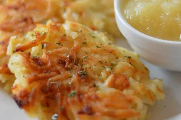

All of my Recipes
Swedish MeatBalls
This Swedish meatball recipe is our family's Christmas tradition. We frequently
double the recipe and keep it warm in a slow cooker. Worth the effort, and the
meatballs are even better the next day! Reserve brown gravy and add sour cream
to it the day you serve the leftovers.
 recipe
recipe
Potato Latkes
Latkes (potato pancakes) are a must-have at Hanukkah, but are really wonderful
any time of the year! This is my mother's recipe, which is honestly the best
potato latke I've had. I usually end up making a second batch because they
disappear so quickly. I've tried other recipes and always return to this one.
Lovely topped with sour cream or applesauce.

recipe
Coquito
Coquito is a creamy, tropical, Puerto Rican holiday drink with tons of coconut
flavor. It's made with both evaporated and condensed milk, cream of coconut,
spices, rum, and — in this version — egg yolks. It is always requested at
my holiday gatherings. Sometimes I hide it in the fridge to keep for myself!
Serve in glass cups and sprinkle with more cinnamon if desired. Feliz Navidad!
 recipe
recipe